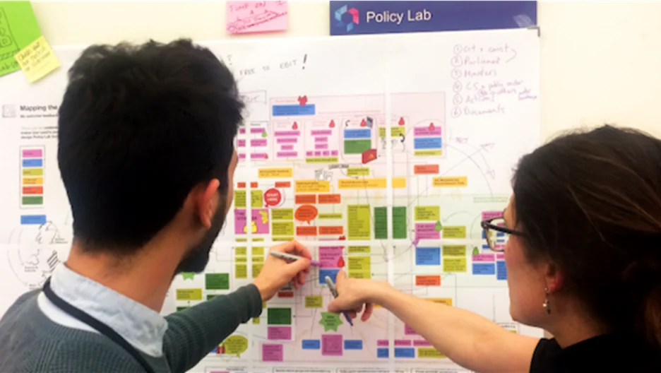

POLICY LAB
Wicked Problems
".... 영향을 받는 사람들을 계획 과정의 참여자로 만드는
협력적 접근 방식의 필요...."
“... 현대 사회에서는 절대적인 공공선과 같은 것이 존재하지 않습니다. 형평성에 대한 객관적인 정의도 없으며, 사회문제에 대응하는 정책의 옳고 그름을 판단할 수 없습니다.
이러한 문제에 대한 최적의 해결책은 존재하지 않습니다.....
다만, 현대 사회의 복잡한 사회문제 즉, Wicked Problem의 문제 해결을 위한 협력에 대한 의지는 근본적인 요인에 대한 더 깊은 이해를 가져오고 해결 방법을 강화할 수 있습니다....”
- Rittel, Horst W.J & Webber, Melvin M. -

UK’s Policy Lab © openpolicy.blog.gov.uk
Policy Labs in Public Design
오늘날 기후변화, 공공환경, 경제문제, 사회차별 등 복잡하고 다양한 이해관계가 얽힌 '사악한 문제(Wicked Problems)'로 정의되는 ‘공공문제’는 기존 계층적인 행정 체계로는 해결이 어려우며, 부서별 독립적인 행정 접근 방식은 정책의 단절과 중복 문제를 초래한다는 비판을 받고 있다. 유럽 선진국에서는 이러한 행정적 한계점을 개선하고자 2000년대 중반부터 유럽을 중심으로 '정책랩(Policy Labs)'과 같은 참여와 협력 중심의 대안적 정책 실험들을 시도하고 있다.
공공영역에서의 공공가치를 추구하는 공공디자인도 같은 문제점을 안고 있는 상황에서 기획기사 'Policy Lab으로 꿈꾸는 공공디자인'에서는 공공영역의 복잡한 문제를 해결하기 위한 공공디자인과 정책랩의 연계 가능성을 선진 사례를 통해서 살펴본다.
'Policy Labs이 뭐지?’
".... Policy Labs은 다양한 주체가 내놓는 혁신적이고 다채로운 아이디어를 중심으로 정책을 설계하고, 이를 구현하는 과정에서 정책의 오차를 수정하기 위한 반복적 실험을 거치며 실효성 높은 정책을 위한 학습의 장을 의미한다....."
- 시민 참여형 정책협업모델 연구, 한국행정연구원 2018 -
정책랩(Policy Labs)은 복잡한 사회문제를 해결하기 위한 새로운 거버넌스 모델로서 정부 부처, 지방자치단체, 공공기관들이 중심이 되어실험과 반복을 통해 정책을 재구성하고 시민과의 협업을 기반으로 더 나은 해결책을 도출하는 것을 목표로 한다.
특히 정책랩의 구현 과정에서는 디자인적 사고와 서비스 디자인 등 디자인 기반 방법론이 도구이자 전략으로 활발히 활용되면서, 다양한 이해관계자의 참여를 유도하고 사용자 중심의 증거 기반 정책결정을 가능하게 하는 데 있어 디자인의 역할이 점점 중요해지고 있다. 비록 ‘정책랩’이라는 용어를 직접 사용하지 않더라도, 이미 많은 공공기관과 지자체에서 유사한 방식으로 문제를 해결하려는 시도가 확산되고 있다.
사회문제해결을 위한 다양한 혁신 거버넌스 프로그램
'Policy Labs을 어떻게 하고 있지?’
영국 UK Policy Lab 고찰을 통한 공공디자인에서의 적용 가능성
사용자 중심성과 디자인 씽킹의 정책 적용
전 세계적으로 다양한 정책랩이 공공 분야에서 혁신적인 활동을 펼치고 있는데 특히 영국의 사례는 정책랩의 중요성과 구체적인 활용 방안을 명확히 보여주고 있다. 영국의 UK Policy Lab 고찰을 통해 공공디자인에서의 적용 가능성을 살펴보고자 한다.
영국 Policy Labs과 파트너 기관 소개 © openpolicy.blog.gov.uk
".... Policy Lab은 디자인, 혁신 및 사람 중심 접근 방식을 통해
정책 수립을 근본적으로 개선하는 것....."
- 영국 정책랩 (UK Policy Lab) -
영국 정책 랩 'UK Policy Lab'은 공공정책 전반에 걸쳐 혁신적 접근법을 확산시키기 위해 2014년 영국 정부 조직 내에 설립되어, 공공정책 수립에 서비스 디자인과 디자인 씽킹과 같은 창의적 방법론을 도입하여 사용자 중심의 정책을 개발하고 더 나은 공공서비스를 제공하고 있다.
UK Policy Lab의 핵심 사명은"디자인, 혁신 및 사람 중심 접근 방식을 통해 정책 수립을 근본적으로 개선하는 것"이다. 이는 정책 수립의 과정에서 단순한 수단의 제공이 아니라 공공정책 개발에 대한 근본적인 방법을 추구하는 혁신이다. 정책 수립을 위한 더 깊은 시스템적 개입을 통해 '디자인', '혁신' 및 '사람 중심 접근 방식'에 대한 강조로 새로운 솔루션과 프로세스를 창출하는 데 중점을 두고 있다.
2014년 이래로 정책랩은 수백 건의 프로젝트에서 정책팀과 광범위한 협력적 참여를 해왔으며 특히, 정책랩을 통해 수천 명의 비 정부부문의 민간영역 이해관계자를 정책 개발에 참여시켜 신뢰와 참여를 구축했다.
Policy Labs의 사람 중심 참여 전략 방법 © openpolicy.blog.gov.uk
'Policy Labs으로 무엇을 할 수 있을까?’
UK Policy Lab이 제공하는 주요 핵심 서비스 모델 소개
●Policy Catalyst_정책 촉매
이 모델은 1주~12주에 이르는 단기 모델로 정책 의제 수립에 있어 방향을 설정하고 우선순위에 동의할 수 있는 수단을 제공하여 하여 정책 개발의 가속화를 촉진한다. 프로그램 안에는 증거 매핑, 복잡성을 해소하기 위한 시스템 맵 생성, 새로운 통찰력 개발, 아이디어 공동 생성 및 실행 우선순위 합의, 시민 및 이해관계자 참여 방법 정의, 정책 아이디어 공동 설계 등의 기술적 방법들이 운영된다. 정책 촉매 과정을 통해 정책 방향의 우선순위를 담은 슬라이드 덱, 관련 시각화 자료, 그리고 '정책 촉매' 과정을 통해 형성된 새로운 네트워크 등 구체적인 결과물이 구현된다.
Policy Lab이 제공하는 핵심 서비스 모델 Policy Catalyst_정책 촉매 사례 © openpolicy.blog.gov.uk
●Policy Development_정책 개발
'Policy Development' 프로그램은 4개월 이상 소요되는 맞춤형 중기 프로젝트로, 다학제적 접근 방식을 통해 정책 개발을 지원한다. 특히 스토리와 논픽션 다큐 방식의 영화 민족지학(film ethnography)과 같은 사람 중심 사고 방법을 통해 시민, 이해관계자 및 시스템에 대한 풍부한 새로운 통찰력을 제공하며 이를 기반으로 공동 설계, 참여형 집단 지성 및 진지한 게임과 같은 방법도 운영한다.
이 과정 안에는 아이디어 및 솔루션 생성, 추측에 의한 실험적 디자인(speculative design) 및 미래 정책 가능성, 구현 전에 솔루션 개발 및 테스트 등이 진행된다. 결과물은 새로운 통찰력, 정책 개념 또는 프로토타입 솔루션, 구현을 위해 보기 쉬운 시각적 영상이나 영화로 구현된다.
Policy Lab이 제공하는 핵심 서비스 모델 Policy Development 사례 © openpolicy.blog.gov.uk
●Shifting Policy Systems_정책 시스템 전환
'Shifting Policy Systems' 모델은복잡성을 해결하고 장기적인 변화를 달성하는 것을 목표로 4개월 이상 소요되는 모델이다. 본 모델 안에는 시민과 일반 공무원부터 정책 전문가에 이르기까지 다양한 이해관계자를 포함하는데, 다양한 관계자의 생생한 경험 인사이트를 통해 현재와 미래의 시스템을 매핑하고 이를 통해 미래의 의제와 비전을 통해 가능한 것을 재구상하는 과정을 갖는다. 그리고 정책 변화를 실현하기 위한 공동 설계 과정을 구축하고 체험 그룹을 구성하여 학습과 실천을 위한 커뮤니티 구축을 진행한다.
Shifting Policy Systems 모델을 통한 결과물은 시각적 매체, 영화, 솔루션 포트폴리오, 로드맵 등 맞춤형으로 구현되어 이해하기 쉽게 제공한다.
Policy Lab이 제공하는 핵심 서비스 모델 Shifting Policy Systems 사례 © openpolicy.blog.gov.uk
●Partnerships_파트너십
'Partnerships' 모델은 유관 혁신 기관과의 4개월 이상 협력을 구축하는 거버넌스 모델로 특별한 영역의 협력을 통해 정책 전문가들에게 새로운 역량에 대한 접근을 제공하고 다양한 접근 방식을 제공하는 프로그램이다. 전문가 조직과의 협업은 정책 연구자들에게 전문적 영역의 경험을 통해 새로운 솔루션과 혁신 방법을 활용하는 방법을 제공한다.
Policy Lab이 제공하는 핵심 서비스 모델 Partnerships 사례 © openpolicy.blog.gov.uk
1. UK Policy Lab Model
전문가 표준(Policy Profession Standards) 모델
정책 랩의 접근 방식은개방성, 실험, 그리고 정책 이해관계자들의 관점을 기반으로 하는데2014년 이래로 정책 랩은 정부 내에서 기본 방법론을 정책 전문가 표준(Policy Profession Standards)으로 정하여 활용하고 있다. 대표적인 기본 모델은 다음과 같다
●사용자 중심 디자인 (User-centred design)
정책 개발에서 최종 사용자(시민, 이해관계자)의 필요와 경험에 중점을 둠.
●집단 지성 (Collective intelligence)
다양한 개인 및 그룹의 지식과 통찰력을 모아 정책 문제를 해결함.
●시스템 디자인 (Systems design)
전체 시스템 관점에서 정책 과제를 이해하고 해결함.
●필름 민족지학 (Film ethnography)
논픽션의 다큐를 사용하여 사람들의 경험과 관점을 포착하고 전달하여 정책에 대한 깊은 통찰력을 제공함.
2. UK Policy Lab Methods
11가지 실험적 정책 방법론
최근 'UK Policy Lab'은 11가지 실험적 정책 방법론을 포함하는 디자인 및 혁신 전략(Design & Innovation Strategy)을 발표했는데 이 중 6가지는 실제 정책 개발에 적용되어 기술, 데이터 및 참여가 정책을 어떻게 개선할 수 있는지를 실증하였다.
'실험적 정책 방법론'의 지속적인 개발 및 테스트, 특히 신기술(메타버스, 디지털 트윈, DAO) 또는 새로운 참여 접근 방식(입법 연극, 정책 내 예술 등)을 활용하는 방법론은 정책 수립의 미래를 대비하려는 정책랩의 정책 진화를 위한 혁신적 방법과 전략을 보여주고 있다.
실험적 정책 방법론
- 슈퍼 예측 (Superforecasting)
- 시리어스 게임 (Serious Games)
- 입법 연극 (Legislative Theatre)
- 메타버스를 통한 참여 (Engaging through the Metaverse)
- 디지털 트윈 (Digital Twins)
- 바디스토밍 (Bodystorming)
- 분산형 자율 조직 (Decentralised Autonomous Organisations)
- 도덕적 상상 (Moral Imaginings)
- 정책 속 예술 (Art in Policy)
- 시민 의회 (Citizen Assemblies)
- 재생 디자인 (Regenerative Design)
3. UK Policy Lab Case
실험적 정책랩 사례
1. Changing Futures
(Ministry for Housing, Communities and Local Government (2022))
Changing Futures는 다중 취약 계층을 위한 맞춤형 사람 중심의 돌봄을 위한 시스템 정책의 변화를 촉진하기 위해 진행되었다. 정책 랩은 MHCLG의 Changing Futures 프로그램과 협력하여 여러 장애를 가진 사람들을 위한 사람 중심의 케어 정책 연구를 위해 9개월에 걸쳐 여러 부문의 이해관계자 그룹, 특히, 민간 전문가에 적극적인 권한부여와 참여를 진행하였다.
다양한 관계자의 생생한 경험을 중심으로 한 혼합 방법 접근 방식을 통해 새로운 시스템 혁신 사례를 구축하고 서비스 및 정책에 대해 공동 설계하여 이러한 미래를 달성하기 위한 프로토타입을 제공하였다.
Policy Labs 사례 Changing Futures © openpolicy.blog.gov.uk
2. MANIFEST
(Cross-government initiative, AHRC)
정책 랩의 매니페스트 프로그램은 예술가들을 정책 개발팀과 연계시켜 정책 개발에 다양한 접근 방법과 통찰력을 제공한다. 본 정책랩에서는 예술가들을 정책팀과 협력할 수 있게 배치하여 정책 전문가들의 사고방식과 방법에 상당한 영향을 미치도록 하여 정책 수립을 변화시키는 예술의 역할을 탐구하였다.
예컨대, 예술 작가의 작업은 커뮤니티 펀드 정책팀의 생생한 경험 연구와 접근성에 대한 접근 방식에 영향을 미쳤으며, 이러한 예술과 정책의 협업은 혁신적인 통찰력을 이끌어내어 기존의 서비스 모델에 도전하고 정부 부처 전반에 걸쳐 보다 포용적이고 공감할 수 있는 정책 수립을 촉진하였다.
Cross-government initiative, AHRC © openpolicy.blog.gov.uk
3. Collective Intelligence for Defence
(MOD, 2023)
영국 국방부(MOD)는 국가 군사전략에 대한 준비, 억제, 방어와 관련하여 전략과 정책 결정에 대한 전통적인 접근 방식을 디지털 및 데이터 기술로 대체하여 도입해야 하는 필요성 제고를 위해본 정책랩을 진행하였다. 본 정책랩에서는 온라인 집단 지성과 사변적 디자인을 적용하여 국방부가 디지털 시대에 국방 전략을 재구상하는 정책개발의 역량을 강화시켰다.
정책 랩은 영국 국방부와 협력하여 민간, 군사 및 산업 조직의 국방 전문가들로부터 새로운 아이디어를 도출하고 개발했으며, 이를 통해 디지털 시대의 국방 및 억지력을 재구성하는 영국 국방의 능력을 구축하였다.
Collective Intelligence for Defence © openpolicy.blog.gov.uk
4. Sea Bass Fisheries Management Plan
(Defra & Welsh Government, 2023)
혼합 방법론(민족지학, 집단 지성, 게임)을 사용하여 1,400명 이상의 이해관계자를 참여시켜 새로운 어업 규제를 공동 설계한 정책랩 사례
Sea Bass Fisheries Management Plan © openpolicy.blog.gov.uk
5. Ecological Intelligence Agency
(Defra Futures, 2022)
사변적 디자인, 도덕적 상상, 집단 지성과 같은 실험적 방법을 사용하여 담수 시스템의 미래 의사 결정을 위한 대안을 만든 정책랩 사례
Ecological Intelligence Agency © superflux.in
6. NSPARC
(National Security Policy & Research CoLab)
다양한 방법을 통해 국가 안보 정책에서 혁신을 주도하며, 다양한 사고와 새로운 정책 수립 역량을 육성하는 정책랩 사례
NSPARC © openpolicy.blog.gov.uk
7. Independent review of children's social care
(Department for Education 2022)
필름 민족지학을 사용하여 실제 내용들을 연출하여 이해도를 향상시켜 변화를 위한 이해도 높은 사례를 만들고, 복지 자금 지원 권고에 근거를 만든 정책랩
Independent review of children's social care © openpolicy.blog.gov.uk
8. Genomics beyond health
(Government Office for Science 2021)
유전체학(게놈) 발전에 따른 범정부 정책 스프린트를 주최하여 부서 간 연결과 합의를 촉진한 정책랩
Genomics beyond health © openpolicy.blog.gov.uk
이러한 선제적 실험들은 정책랩을 미래 예측 전략의 수단으로 활용함으로써, 급변하는 사회 속에서 영국 정부가 공공문제에 능동적으로 대응할 수 있도록 뒷받침하고 있다. 정책랩은 사회 및 기술 발전을 기반으로, 거버넌스를 통한 전략적 접근을 가능하게 하며, 이를 통해 정책 수단 또한 지속적으로 진화하고 있다.
'Policy Lab'의 공공디자인 적용가능성
'공공디자인을 위한 Policy Labs을 만들자’
공공디자인 Policy Lab은 복잡한 사회문제 해결 및 시민 삶의 질 향상을 위한 전략적 도구
● 공공 부문의 공공가치 형성 및 디자인 의제 개발, 기획 역량 강화
● 정책 결정 과정에 공공디자인적 특성 기반 기획 프로세스 구축
● 공공디자인 기획 분야의 혁신 가속화: 심층적 기획 역량, 실험 설계 및 실행 지원
● 공공디자인 정책 혁신을 위한 허브 기능 제공
'공공디자인 정책랩_Public Design Lab'은 단순히 미적 개선이나 개별 시설물 디자인을 넘어, 공공디자인을 복잡한 사회문제를 해결하고 시민의 삶의 질을 실질적으로 향상시키는 전략적 도구로 활용하는 데 중추적인 역할을 할 수 있다.
'공공디자인 정책랩'은 단기적인 프로젝트 수행을 넘어, 공공 부문 전반의 공공가치 형성의 디자인 의제 개발 및 기획 역량을 강화하고, 정책 결정 과정에 공공디자인적 특성 기반의 기획 프로세스를 구축할 수 있다.
'공공디자인 정책랩'은 공공디자인 기획 분야의 혁신을 가속화하는 핵심 동력의 역할을 하여 심층적인 기획 역량, 실험 설계 및 실행, 그리고 공공디자인 정책 혁신을 위한 허브 기능을 제공하여 개별 프로젝트의 성공을 넘어 공공디자인이 기획, 실행, 평가되는 방식 전반에 걸쳐 시스템적인 개선을 이끌어낼 수 있다.
"공공디자인을 위한 Policy Lab 전략"
1. 시민/사용자 중심의 문제 정의 및 해결
공공디자인 정책랩_Public Design Lab은 시민의 실제 경험과 요구를 심층적으로 이해하는 것에서 출발해야 한다. 민족지학 연구, 사용자 경험(UX) 분석, 심리학 및 행동경제학 등을 통해 문제를 시민 관점에서 재정의하고 공공디자인의 방법론을 수립해야 한다.
2. 증거 기반의 실험과 반복을 통한 정책 검증
공공디자인 정책랩_Public Design Lab은 공공디자인 정책 아이디어를 프로토타이핑하고 실제 현장에서 반복적으로 테스트하는 과정을 통해 정책의 실효성을 높이는 데 역할을 할 수 있다. 실험적 접근과 데이터 분석을 통해 정책의 효과를 검증하고 실패를 통해 학습하는 문화가 정착되어야 한다.
3. 다학제적 전문성과 다양한 이해관계자 협력
공공디자인 정책랩_Public Design Lab은 디자이너, 심리학자, 데이터 실증연구자, 행동경제학자 등 다양한 전문 분야의 협력으로 구성되어야 한다. 시민, 전문가, 공무원 등 다양한 그룹의 참여와 협력 기반으로 통합적이고 유연한 문제 해결의 거버넌스 모델을 구축한다.
4. 디자인 주도의 근본적인 정책 시스템 전환
공공디자인 정책랩_Public Design Lab은 공공문제를 바라보는 관점과 해석의 혁신을 구축해야 한다. 특히 디자이너가 결과물 도출과 더불어 전력적 도출의 '혁신 촉매'로서 주도적인 역할과 제도적 보호를 받는 구조가 마련되어 디자인이 가진 문제해결방법론을 적극 활용해야 한다.
참고자료
UK Policy Lab Prospectus 2024-2025
https://openpolicy.blog.gov.uk
https://servicedesign.tistory.com/680
시민 참여형 정책협업모델 연구, 한국행정연구원, 2018
THE PUBLIC DESIGN 365 구독하기
대한민국 공공디자인 전문가들의 공유 뉴스레터 이름란에 소속 및 이름을 적어주세요. (예_홍익대학교 공공디자인 연구센터_홍태의)
page.stibee.com